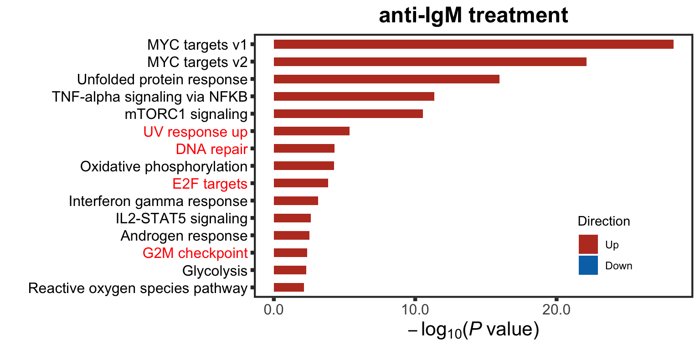
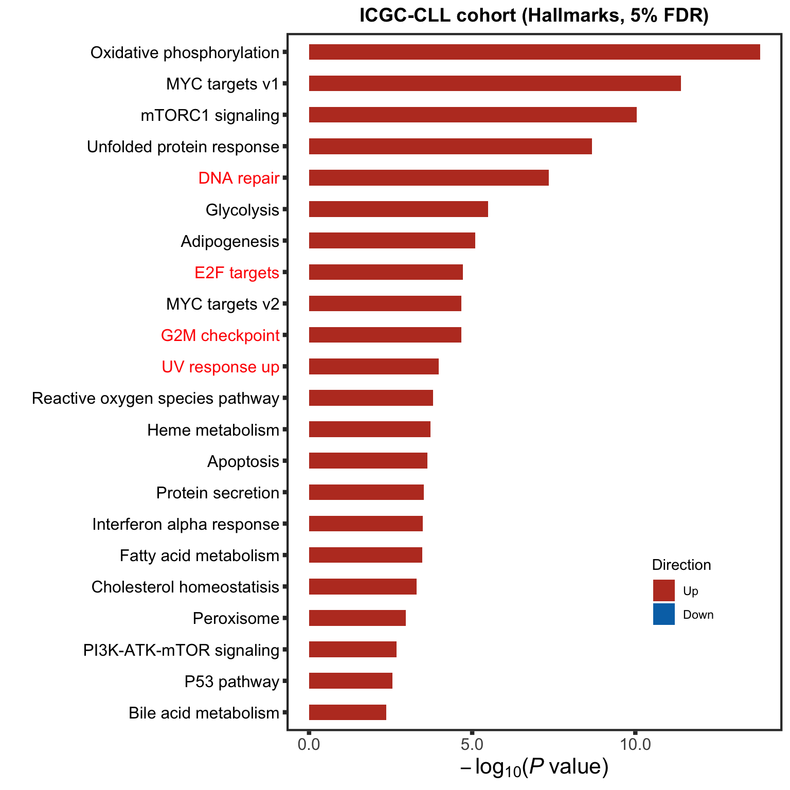
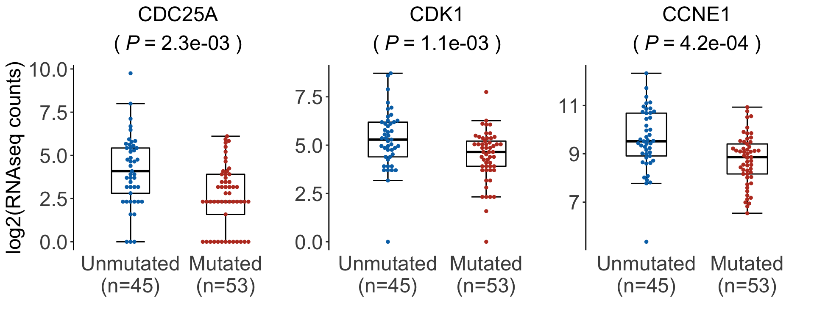

Last updated: 2021-11-05
Checks: 6 1
Knit directory: DepInfeR/analysis/
This reproducible R Markdown analysis was created with workflowr (version 1.6.2). The Checks tab describes the reproducibility checks that were applied when the results were created. The Past versions tab lists the development history.
The R Markdown is untracked by Git. To know which version of the R Markdown file created these results, you’ll want to first commit it to the Git repo. If you’re still working on the analysis, you can ignore this warning. When you’re finished, you can run wflow_publish to commit the R Markdown file and build the HTML.
Great job! The global environment was empty. Objects defined in the global environment can affect the analysis in your R Markdown file in unknown ways. For reproduciblity it’s best to always run the code in an empty environment.
The command set.seed(20211005) was run prior to running the code in the R Markdown file. Setting a seed ensures that any results that rely on randomness, e.g. subsampling or permutations, are reproducible.
Great job! Recording the operating system, R version, and package versions is critical for reproducibility.
Nice! There were no cached chunks for this analysis, so you can be confident that you successfully produced the results during this run.
Great job! Using relative paths to the files within your workflowr project makes it easier to run your code on other machines.
Great! You are using Git for version control. Tracking code development and connecting the code version to the results is critical for reproducibility.
The results in this page were generated with repository version 43be8a7. See the Past versions tab to see a history of the changes made to the R Markdown and HTML files.
Note that you need to be careful to ensure that all relevant files for the analysis have been committed to Git prior to generating the results (you can use wflow_publish or wflow_git_commit). workflowr only checks the R Markdown file, but you know if there are other scripts or data files that it depends on. Below is the status of the Git repository when the results were generated:
Ignored files:
Ignored: .DS_Store
Ignored: .Rhistory
Ignored: .Rproj.user/
Ignored: analysis/.DS_Store
Ignored: analysis/.Rhistory
Ignored: data/.DS_Store
Ignored: output/.DS_Store
Untracked files:
Untracked: analysis/analysis_EMBL2016.Rmd
Untracked: analysis/analysis_GDSC.Rmd
Untracked: analysis/analysis_RNAseq.Rmd
Untracked: analysis/analysis_beatAML.Rmd
Untracked: analysis/process_EMBL2016.Rmd
Untracked: analysis/process_GDSC.Rmd
Untracked: analysis/process_beatAML.Rmd
Untracked: analysis/process_kinobeads.Rmd
Untracked: code/utils.R
Untracked: data/BeatAML/
Untracked: data/EMBL2016/
Untracked: data/GDSC/
Untracked: data/Kinobeads/
Untracked: data/RNAseq/
Untracked: manuscript/
Untracked: output/BeatAML_result.RData
Untracked: output/EMBL_result.RData
Untracked: output/EMBL_resultSub.RData
Untracked: output/GDSC_result.RData
Untracked: output/allTargets.rds
Untracked: output/inputs_BeatAML.RData
Untracked: output/inputs_EMBL.RData
Untracked: output/inputs_GDSC.RData
Unstaged changes:
Modified: README.md
Modified: _workflowr.yml
Modified: analysis/_site.yml
Deleted: analysis/about.Rmd
Modified: analysis/index.Rmd
Deleted: analysis/license.Rmd
Deleted: output/README.md
Note that any generated files, e.g. HTML, png, CSS, etc., are not included in this status report because it is ok for generated content to have uncommitted changes.
There are no past versions. Publish this analysis with wflow_publish() to start tracking its development.
Packages
library(RColorBrewer)
library(DESeq2)
library(limma)
library(piano)
library(Biobase)
library(ggbeeswarm)
library(tidyverse)
source("../code/utils.R")
knitr::opts_chunk$set(dev=c("png","pdf"))load("../data/RNAseq/gse39411.RData")
gmts = list(H = "../data/RNAseq/h.all.v6.2.symbols.gmt")
setMap <- read_tsv("../data/RNAseq/setToPathway.txt", col_types = "cc")#gse <- gse39411[[1]]
#subset for only B-cell and CLL without transfection
#gse <- gse[,gse$`transfected with:ch1` == "none" &
# gse$`time point (min):ch1` == "T390" &
# gse$`cell type:ch1` == "chronic lymphocytic leukemia B-cell"]
#save
#save(gse, file = "../data/RNAseq/gse39411.RData")
#vst
gse.vst <- gse
exprs(gse.vst) <- limma::normalizeVSN(gse.vst)
patAnno <- pData(gse.vst) %>% rownames_to_column("sampleID") %>%
select(sampleID, description) %>%
separate(description, into = c("patID","stimulation","timePoint"),sep = "_") %>%
mutate(cellType = substr(patID,1,nchar(patID)-1)) %>%
mutate(cellType = ifelse(cellType == "N", "B-cell",cellType)) %>%
mutate(timePoint = abs(as.integer(gsub("T","",timePoint)))) %>%
mutate(stimulation = factor(stimulation, levels = c("US","S")))
pData(gse.vst) <- patAnno[match(colnames(gse.vst), patAnno$sampleID),]Differential expression (CLL cells for 390 min)
gse.test <- gse.vstEnrichment
highSet <- c("UV response up", "DNA repair", "G2M checkpoint", "E2F targets")
exprMat <- exprs(gse.test)
designMat <- model.matrix( ~ 1 + patID + stimulation, pData(gse.test))
enrichRes <- runCamera(exprMat, designMat, gmts$H, id = fData(gse.test)$`Gene Symbol`,
method = "camera", pCut = 0.05, ifFDR = TRUE, removePrefix = "HALLMARK_",
plotTitle = "anti-IgM treatment",insideLegend = TRUE, setToHighlight = highSet, setMap = setMap)Warning: Vectorized input to `element_text()` is not officially supported.
Results may be unexpected or may change in future versions of ggplot2.plotEnrich.IgM <- enrichRes$enrichPlot+ theme(plot.title = element_text(size=18, face = "bold"))
plotEnrich.IgM
Load and pro-processing RNAseq dataset
load("../data/RNAseq/ddsCampo.RData")
ddsCLL <- ddsCampo[,!is.na(ddsCampo$IGHV) ]
ddsCLL <- estimateSizeFactors(ddsCLL)
ddsCLL <- ddsCLL[rowSums(counts(ddsCLL)) > 10,]
ddsCLL.voom <- ddsCLL
assay(ddsCLL.voom) <- limma::voom(counts(ddsCLL), lib.size = ddsCLL$sizeFactor)$Eighv <- factor(ddsCLL.voom$IGHV, levels = c("mutated","unmutated"))
designMat <- model.matrix(~ 1 + ighv)
enrichRes <- runCamera(assay(ddsCLL.voom), designMat, gmts$H,
id = rowData(ddsCLL.voom)$symbol,
method = "camera", pCut = 0.01, ifFDR = TRUE, removePrefix = "HALLMARK_",
plotTitle = "ICGC-CLL cohort (Hallmarks, 5% FDR)",
setToHighlight = highSet, setMap = setMap, insideLegend = TRUE)Warning: Vectorized input to `element_text()` is not officially supported.
Results may be unexpected or may change in future versions of ggplot2.enrichICGC <- enrichRes$enrichPlot
enrichICGC
ddsCLL$IGHV <- factor(ddsCLL$IGHV, levels = c("unmutated","mutated"))
design(ddsCLL) <- ~ IGHV
deRes <- DESeq(ddsCLL)using pre-existing size factorsestimating dispersionsgene-wise dispersion estimatesmean-dispersion relationshipfinal dispersion estimatesfitting model and testing-- replacing outliers and refitting for 2354 genes
-- DESeq argument 'minReplicatesForReplace' = 7
-- original counts are preserved in counts(dds)estimating dispersionsfitting model and testingresTab <- results(deRes, tidy = TRUE) %>%
mutate(symbol = rowData(ddsCLL[row,])$symbol)
Warning: The above code chunk cached its results, but it won’t be re-run if previous chunks it depends on are updated. If you need to use caching, it is highly recommended to also set knitr::opts_chunk$set(autodep = TRUE) at the top of the file (in a chunk that is not cached). Alternatively, you can customize the option dependson for each individual chunk that is cached. Using either autodep or dependson will remove this warning. See the knitr cache options for more details.
geneList <- c("CDC25A","CDK1","CCNE1")
sigTab <- filter(resTab, symbol %in% geneList)
pList <- lapply(seq(nrow(sigTab)), function(i) {
symbol <- sigTab[i,]$symbol
pval <- sigTab[i,]$pvalue
id <- sigTab[i,]$row
plotTab <- tibble(expr = log2(counts(ddsCLL)[id,]+1),
IGHV.status = str_to_title(ddsCLL$IGHV),
patID = colnames(ddsCLL))
numTab <- group_by(plotTab, IGHV.status) %>%
summarise(n=length(patID))
plotTab <- left_join(plotTab, numTab, by = "IGHV.status") %>%
mutate(mutNum = sprintf("%s\n(n=%s)", IGHV.status, n)) %>%
mutate(mutNum = factor(mutNum, levels = unique(mutNum)))
titleText <- sprintf("%s", symbol)
pval <- formatNum(pval, digits = 1, format="e")
titleText <- bquote(atop(.(titleText), "("~italic("P")~"="~.(pval)~")"))
ggplot(plotTab, aes(x = mutNum,y = expr)) +
stat_boxplot(geom = "errorbar", width = 0.3) +
geom_boxplot(outlier.shape = NA, col="black", width=0.4) +
geom_beeswarm(cex=2, size =1, aes(col = mutNum)) +
theme_classic() +
xlab("") + ylab("log2(RNAseq counts)") + ggtitle(titleText) + xlab("") +
scale_color_manual(values = c("#0072B5FF","#BC3C29FF")) +
theme(axis.line.x = element_blank(), axis.ticks.x = element_blank(),
axis.title = element_text(size=18),
axis.text = element_text(size=18),
plot.title = element_text(size= 18, face = "bold", hjust = 0.5),
legend.position = "none",
axis.title.x = element_text(face="bold"))
})
noY <- theme(axis.title.y = element_blank())
cowplot::plot_grid(pList[[1]],pList[[2]]+noY, pList[[3]] + noY, nrow=1,
rel_widths = c(1.1,1,1))
sessionInfo()R version 4.0.2 (2020-06-22)
Platform: x86_64-apple-darwin17.0 (64-bit)
Running under: macOS 10.16
Matrix products: default
BLAS: /Library/Frameworks/R.framework/Versions/4.0/Resources/lib/libRblas.dylib
LAPACK: /Library/Frameworks/R.framework/Versions/4.0/Resources/lib/libRlapack.dylib
locale:
[1] en_US.UTF-8/en_US.UTF-8/en_US.UTF-8/C/en_US.UTF-8/en_US.UTF-8
attached base packages:
[1] parallel stats4 stats graphics grDevices utils datasets
[8] methods base
other attached packages:
[1] forcats_0.5.1 stringr_1.4.0
[3] dplyr_1.0.7 purrr_0.3.4
[5] readr_2.0.0 tidyr_1.1.3
[7] tibble_3.1.3 tidyverse_1.3.1
[9] ggbeeswarm_0.6.0 ggplot2_3.3.5
[11] piano_2.4.0 limma_3.44.3
[13] DESeq2_1.28.1 SummarizedExperiment_1.18.2
[15] DelayedArray_0.14.1 matrixStats_0.60.0
[17] Biobase_2.48.0 GenomicRanges_1.40.0
[19] GenomeInfoDb_1.24.2 IRanges_2.22.2
[21] S4Vectors_0.26.1 BiocGenerics_0.34.0
[23] RColorBrewer_1.1-2
loaded via a namespace (and not attached):
[1] readxl_1.3.1 backports_1.2.1 fastmatch_1.1-3
[4] workflowr_1.6.2 igraph_1.2.6 shinydashboard_0.7.1
[7] splines_4.0.2 BiocParallel_1.22.0 digest_0.6.27
[10] htmltools_0.5.1.1 fansi_0.5.0 magrittr_2.0.1
[13] memoise_2.0.0 cluster_2.1.2 tzdb_0.1.2
[16] annotate_1.66.0 modelr_0.1.8 vroom_1.5.3
[19] colorspace_2.0-2 blob_1.2.2 rvest_1.0.1
[22] haven_2.4.1 xfun_0.24 crayon_1.4.1
[25] RCurl_1.98-1.3 jsonlite_1.7.2 genefilter_1.70.0
[28] survival_3.2-11 glue_1.4.2 gtable_0.3.0
[31] zlibbioc_1.34.0 XVector_0.28.0 scales_1.1.1
[34] vsn_3.56.0 DBI_1.1.1 relations_0.6-9
[37] Rcpp_1.0.7 xtable_1.8-4 bit_4.0.4
[40] preprocessCore_1.50.0 DT_0.18 htmlwidgets_1.5.3
[43] httr_1.4.2 fgsea_1.14.0 gplots_3.1.1
[46] ellipsis_0.3.2 farver_2.1.0 pkgconfig_2.0.3
[49] XML_3.99-0.6 sass_0.4.0 dbplyr_2.1.1
[52] locfit_1.5-9.4 utf8_1.2.2 tidyselect_1.1.1
[55] labeling_0.4.2 rlang_0.4.11 later_1.2.0
[58] AnnotationDbi_1.50.3 munsell_0.5.0 cellranger_1.1.0
[61] tools_4.0.2 visNetwork_2.0.9 cachem_1.0.5
[64] cli_3.0.1 generics_0.1.0 RSQLite_2.2.7
[67] broom_0.7.9 evaluate_0.14 fastmap_1.1.0
[70] yaml_2.2.1 knitr_1.33 bit64_4.0.5
[73] fs_1.5.0 caTools_1.18.2 mime_0.11
[76] slam_0.1-48 xml2_1.3.2 compiler_4.0.2
[79] rstudioapi_0.13 beeswarm_0.4.0 affyio_1.58.0
[82] marray_1.66.0 reprex_2.0.0 geneplotter_1.66.0
[85] bslib_0.2.5.1 stringi_1.7.3 highr_0.9
[88] lattice_0.20-44 Matrix_1.3-4 shinyjs_2.0.0
[91] vctrs_0.3.8 pillar_1.6.2 lifecycle_1.0.0
[94] BiocManager_1.30.16 jquerylib_0.1.4 cowplot_1.1.1
[97] data.table_1.14.0 bitops_1.0-7 httpuv_1.6.1
[100] R6_2.5.0 affy_1.66.0 promises_1.2.0.1
[103] KernSmooth_2.23-20 gridExtra_2.3 vipor_0.4.5
[106] codetools_0.2-18 gtools_3.9.2 assertthat_0.2.1
[109] rprojroot_2.0.2 withr_2.4.2 GenomeInfoDbData_1.2.3
[112] hms_1.1.0 grid_4.0.2 rmarkdown_2.9
[115] git2r_0.28.0 sets_1.0-18 shiny_1.6.0
[118] lubridate_1.7.10